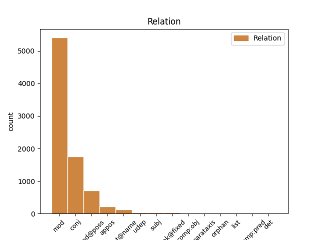
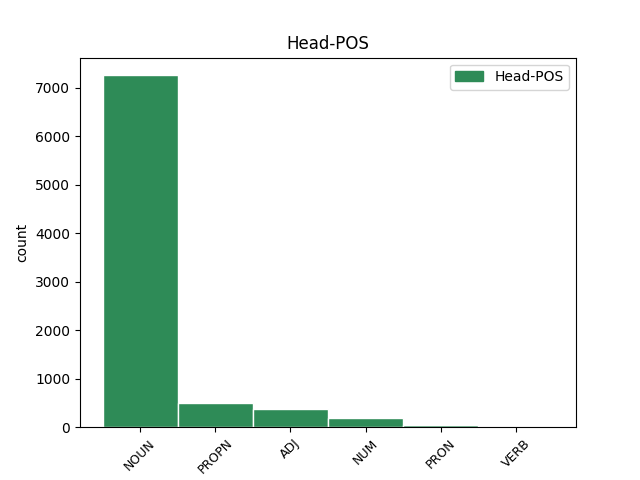
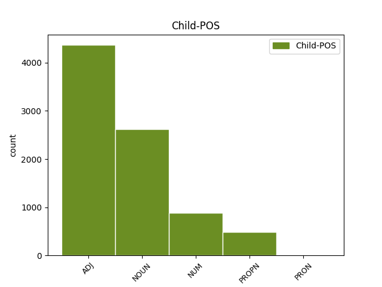

Distribution of features within this leaf



Agreement Rules sorted by frequency.
- When the dependent token is the modifer(mod) of the head token, and the head token is NOUN
1 Även _ _ _ _ 0 _ _ _
2 den _ _ _ _ 0 _ _ _
3 förälder _ _ _ _ 0 _ _ _
4 som _ _ _ _ 0 _ _ _
5 väljer _ _ _ _ 0 _ _ _
6 att _ _ _ _ 0 _ _ _
7 stanna _ _ _ _ 0 _ _ _
8 hemma _ _ _ _ 0 _ _ _
9 under _ _ _ _ 0 _ _ _
10 barnens _ _ _ _ 0 _ _ _
11 första _ _ _ _ 0 _ _ _
12 år _ _ _ _ 0 _ _ _
13 har _ _ _ _ 0 _ _ _
14 ett _ _ _ _ 0 _ _ _
15 legitimt legitim ADJ JJ|POS|NEU|SIN|IND|NOM Case=Nom|Definite=Ind|Degree=Pos|Gender=Neut|Number=Sing 16 mod _ _
16 behov behov NOUN NN|NEU|SIN|IND|NOM Case=Nom|Definite=Ind|Gender=Neut|Number=Sing 0 _ _ _
17 av _ _ _ _ 0 _ _ _
18 att _ _ _ _ 0 _ _ _
19 då _ _ _ _ 0 _ _ _
20 och _ _ _ _ 0 _ _ _
21 då _ _ _ _ 0 _ _ _
22 få _ _ _ _ 0 _ _ _
23 avkoppling _ _ _ _ 0 _ _ _
24 från _ _ _ _ 0 _ _ _
25 barnen _ _ _ _ 0 _ _ _
26 och _ _ _ _ 0 _ _ _
27 borde _ _ _ _ 0 _ _ _
28 inte _ _ _ _ 0 _ _ _
29 behöva _ _ _ _ 0 _ _ _
30 släpa _ _ _ _ 0 _ _ _
31 med _ _ _ _ 0 _ _ _
32 sig _ _ _ _ 0 _ _ _
33 barnen _ _ _ _ 0 _ _ _
34 till _ _ _ _ 0 _ _ _
35 tandläkare _ _ _ _ 0 _ _ _
36 , _ _ _ _ 0 _ _ _
37 hårfrisörska _ _ _ _ 0 _ _ _
38 etc _ _ _ _ 0 _ _ _
39 . _ _ _ _ 0 _ _ _
1 Även _ _ _ _ 0 _ _ _
2 den _ _ _ _ 0 _ _ _
3 förälder _ _ _ _ 0 _ _ _
4 som _ _ _ _ 0 _ _ _
5 väljer _ _ _ _ 0 _ _ _
6 att _ _ _ _ 0 _ _ _
7 stanna _ _ _ _ 0 _ _ _
8 hemma _ _ _ _ 0 _ _ _
9 under _ _ _ _ 0 _ _ _
10 barnens _ _ _ _ 0 _ _ _
11 första _ _ _ _ 0 _ _ _
12 år _ _ _ _ 0 _ _ _
13 har _ _ _ _ 0 _ _ _
14 ett _ _ _ _ 0 _ _ _
15 legitimt _ _ _ _ 0 _ _ _
16 behov _ _ _ _ 0 _ _ _
17 av _ _ _ _ 0 _ _ _
18 att _ _ _ _ 0 _ _ _
19 då _ _ _ _ 0 _ _ _
20 och _ _ _ _ 0 _ _ _
21 då _ _ _ _ 0 _ _ _
22 få _ _ _ _ 0 _ _ _
23 avkoppling _ _ _ _ 0 _ _ _
24 från _ _ _ _ 0 _ _ _
25 barnen _ _ _ _ 0 _ _ _
26 och _ _ _ _ 0 _ _ _
27 borde _ _ _ _ 0 _ _ _
28 inte _ _ _ _ 0 _ _ _
29 behöva _ _ _ _ 0 _ _ _
30 släpa _ _ _ _ 0 _ _ _
31 med _ _ _ _ 0 _ _ _
32 sig _ _ _ _ 0 _ _ _
33 barnen _ _ _ _ 0 _ _ _
34 till _ _ _ _ 0 _ _ _
35 tandläkare tandläkare NOUN NN|UTR|SIN|IND|NOM Case=Nom|Definite=Ind|Gender=Com|Number=Sing 0 _ _ _
36 , _ _ _ _ 0 _ _ _
37 hårfrisörska hårfrisörska NOUN NN|UTR|SIN|IND|NOM Case=Nom|Definite=Ind|Gender=Com|Number=Sing 35 conj _ _
38 etc _ _ _ _ 0 _ _ _
39 . _ _ _ _ 0 _ _ _
1 Ser _ _ _ _ 0 _ _ _
2 man _ _ _ _ 0 _ _ _
3 nu _ _ _ _ 0 _ _ _
4 till _ _ _ _ 0 _ _ _
5 föräldrarnas _ _ _ _ 0 _ _ _
6 behov _ _ _ _ 0 _ _ _
7 så _ _ _ _ 0 _ _ _
8 behöver _ _ _ _ 0 _ _ _
9 det _ _ _ _ 0 _ _ _
10 inte _ _ _ _ 0 _ _ _
11 råda _ _ _ _ 0 _ _ _
12 något _ _ _ _ 0 _ _ _
13 motsatsförhållande _ _ _ _ 0 _ _ _
14 där _ _ _ _ 0 _ _ _
15 , _ _ _ _ 0 _ _ _
16 vilken _ _ _ _ 0 _ _ _
17 väg _ _ _ _ 0 _ _ _
18 de _ _ _ _ 0 _ _ _
19 än _ _ _ _ 0 _ _ _
20 väljer _ _ _ _ 0 _ _ _
21 , _ _ _ _ 0 _ _ _
22 om _ _ _ _ 0 _ _ _
23 samhället _ _ _ _ 0 _ _ _
24 skapar _ _ _ _ 0 _ _ _
25 former _ _ _ _ 0 _ _ _
26 för _ _ _ _ 0 _ _ _
27 att _ _ _ _ 0 _ _ _
28 ta _ _ _ _ 0 _ _ _
29 hand _ _ _ _ 0 _ _ _
30 om _ _ _ _ 0 _ _ _
31 barnen _ _ _ _ 0 _ _ _
32 som _ _ _ _ 0 _ _ _
33 är _ _ _ _ 0 _ _ _
34 friare fri ADJ JJ|KOM|UTR/NEU|SIN/PLU|IND/DEF|NOM Case=Nom|Degree=Cmp 0 _ _ _
35 och _ _ _ _ 0 _ _ _
36 smidigare smidig ADJ JJ|KOM|UTR/NEU|SIN/PLU|IND/DEF|NOM Case=Nom|Degree=Cmp 34 conj _ _
37 än _ _ _ _ 0 _ _ _
38 de _ _ _ _ 0 _ _ _
39 vi _ _ _ _ 0 _ _ _
40 nu _ _ _ _ 0 _ _ _
41 har _ _ _ _ 0 _ _ _
42 . _ _ _ _ 0 _ _ _
1 Betonandet _ _ _ _ 0 _ _ _
2 av _ _ _ _ 0 _ _ _
3 troheten _ _ _ _ 0 _ _ _
4 och _ _ _ _ 0 _ _ _
5 av _ _ _ _ 0 _ _ _
6 förlåtelsen _ _ _ _ 0 _ _ _
7 i _ _ _ _ 0 _ _ _
8 den _ _ _ _ 0 _ _ _
9 kristna _ _ _ _ 0 _ _ _
10 äktenskapssynen _ _ _ _ 0 _ _ _
11 ger _ _ _ _ 0 _ _ _
12 åt _ _ _ _ 0 _ _ _
13 denna _ _ _ _ 0 _ _ _
14 en _ _ _ _ 0 _ _ _
15 sådan _ _ _ _ 0 _ _ _
16 karaktär _ _ _ _ 0 _ _ _
17 , _ _ _ _ 0 _ _ _
18 att _ _ _ _ 0 _ _ _
19 man _ _ _ _ 0 _ _ _
20 har _ _ _ _ 0 _ _ _
21 allt _ _ _ _ 0 _ _ _
22 skäl _ _ _ _ 0 _ _ _
23 att _ _ _ _ 0 _ _ _
24 hävda _ _ _ _ 0 _ _ _
25 att _ _ _ _ 0 _ _ _
26 den _ _ _ _ 0 _ _ _
27 människa _ _ _ _ 0 _ _ _
28 som _ _ _ _ 0 _ _ _
29 accepterar _ _ _ _ 0 _ _ _
30 premisserna _ _ _ _ 0 _ _ _
31 för _ _ _ _ 0 _ _ _
32 den _ _ _ _ 0 _ _ _
33 kristna _ _ _ _ 0 _ _ _
34 etiken _ _ _ _ 0 _ _ _
35 i _ _ _ _ 0 _ _ _
36 denna _ _ _ _ 0 _ _ _
37 också _ _ _ _ 0 _ _ _
38 kan _ _ _ _ 0 _ _ _
39 finna _ _ _ _ 0 _ _ _
40 den _ _ _ _ 0 _ _ _
41 djupaste _ _ _ _ 0 _ _ _
42 humanitet humanitet NOUN NN|UTR|SIN|IND|NOM Case=Nom|Definite=Ind|Gender=Com|Number=Sing 0 _ _ _
43 - _ _ _ _ 0 _ _ _
44 i _ _ _ _ 0 _ _ _
45 betydelsen _ _ _ _ 0 _ _ _
46 realism realism NOUN NN|UTR|SIN|IND|NOM Case=Nom|Definite=Ind|Gender=Com|Number=Sing 42 appos _ SpaceAfter=No
47 , _ _ _ _ 0 _ _ _
48 omtanke _ _ _ _ 0 _ _ _
49 , _ _ _ _ 0 _ _ _
50 hjälp _ _ _ _ 0 _ _ _
51 . _ _ _ _ 0 _ _ _
1 Jag _ _ _ _ 0 _ _ _
2 erkänner _ _ _ _ 0 _ _ _
3 därför _ _ _ _ 0 _ _ _
4 , _ _ _ _ 0 _ _ _
5 att _ _ _ _ 0 _ _ _
6 jag _ _ _ _ 0 _ _ _
7 har _ _ _ _ 0 _ _ _
8 svårt _ _ _ _ 0 _ _ _
9 att _ _ _ _ 0 _ _ _
10 följa _ _ _ _ 0 _ _ _
11 tankegången _ _ _ _ 0 _ _ _
12 hos _ _ _ _ 0 _ _ _
13 Göta Göta PROPN PM|NOM Case=Nom 0 _ _ _
14 och _ _ _ _ 0 _ _ _
15 Ludvig Ludvig PROPN PM|NOM Case=Nom 13 conj _ _
16 Jönsson _ _ _ _ 0 _ _ _
17 i _ _ _ _ 0 _ _ _
18 detta _ _ _ _ 0 _ _ _
19 stycke _ _ _ _ 0 _ _ _
20 : _ _ _ _ 0 _ _ _
1 År _ _ _ _ 0 _ _ _
2 1951 _ _ _ _ 0 _ _ _
3 gjorde _ _ _ _ 0 _ _ _
4 den _ _ _ _ 0 _ _ _
5 engelske _ _ _ _ 0 _ _ _
6 läkaren läkare NOUN NN|UTR|SIN|DEF|NOM Case=Nom|Definite=Def|Gender=Com|Number=Sing 7 mod _ _
7 J. J. PROPN PM|NOM Case=Nom 0 _ _ _
8 Bowlby _ _ _ _ 0 _ _ _
9 för _ _ _ _ 0 _ _ _
10 WHO:s _ _ _ _ 0 _ _ _
11 räkning _ _ _ _ 0 _ _ _
12 en _ _ _ _ 0 _ _ _
13 sammanställning _ _ _ _ 0 _ _ _
14 av _ _ _ _ 0 _ _ _
15 dittills _ _ _ _ 0 _ _ _
16 gjorda _ _ _ _ 0 _ _ _
17 undersökningar _ _ _ _ 0 _ _ _
18 över _ _ _ _ 0 _ _ _
19 hur _ _ _ _ 0 _ _ _
20 späda _ _ _ _ 0 _ _ _
21 och _ _ _ _ 0 _ _ _
22 små _ _ _ _ 0 _ _ _
23 barn _ _ _ _ 0 _ _ _
24 , _ _ _ _ 0 _ _ _
25 som _ _ _ _ 0 _ _ _
26 för _ _ _ _ 0 _ _ _
27 någon _ _ _ _ 0 _ _ _
28 tid _ _ _ _ 0 _ _ _
29 helt _ _ _ _ 0 _ _ _
30 skilts _ _ _ _ 0 _ _ _
31 från _ _ _ _ 0 _ _ _
32 sin _ _ _ _ 0 _ _ _
33 mor _ _ _ _ 0 _ _ _
34 , _ _ _ _ 0 _ _ _
35 utvecklas _ _ _ _ 0 _ _ _
36 . _ _ _ _ 0 _ _ _
1 År år NOUN NN|NEU|SIN|IND|NOM Case=Nom|Definite=Ind|Gender=Neut|Number=Sing 2 mod _ _
2 1951 1951 NUM RG|NOM Case=Nom|NumType=Card 0 _ _ _
3 gjorde _ _ _ _ 0 _ _ _
4 den _ _ _ _ 0 _ _ _
5 engelske _ _ _ _ 0 _ _ _
6 läkaren _ _ _ _ 0 _ _ _
7 J. _ _ _ _ 0 _ _ _
8 Bowlby _ _ _ _ 0 _ _ _
9 för _ _ _ _ 0 _ _ _
10 WHO:s _ _ _ _ 0 _ _ _
11 räkning _ _ _ _ 0 _ _ _
12 en _ _ _ _ 0 _ _ _
13 sammanställning _ _ _ _ 0 _ _ _
14 av _ _ _ _ 0 _ _ _
15 dittills _ _ _ _ 0 _ _ _
16 gjorda _ _ _ _ 0 _ _ _
17 undersökningar _ _ _ _ 0 _ _ _
18 över _ _ _ _ 0 _ _ _
19 hur _ _ _ _ 0 _ _ _
20 späda _ _ _ _ 0 _ _ _
21 och _ _ _ _ 0 _ _ _
22 små _ _ _ _ 0 _ _ _
23 barn _ _ _ _ 0 _ _ _
24 , _ _ _ _ 0 _ _ _
25 som _ _ _ _ 0 _ _ _
26 för _ _ _ _ 0 _ _ _
27 någon _ _ _ _ 0 _ _ _
28 tid _ _ _ _ 0 _ _ _
29 helt _ _ _ _ 0 _ _ _
30 skilts _ _ _ _ 0 _ _ _
31 från _ _ _ _ 0 _ _ _
32 sin _ _ _ _ 0 _ _ _
33 mor _ _ _ _ 0 _ _ _
34 , _ _ _ _ 0 _ _ _
35 utvecklas _ _ _ _ 0 _ _ _
36 . _ _ _ _ 0 _ _ _
1 År _ _ _ _ 0 _ _ _
2 1951 _ _ _ _ 0 _ _ _
3 gjorde _ _ _ _ 0 _ _ _
4 den _ _ _ _ 0 _ _ _
5 engelske _ _ _ _ 0 _ _ _
6 läkaren _ _ _ _ 0 _ _ _
7 J. J. PROPN PM|NOM Case=Nom 0 _ _ _
8 Bowlby Bowlby PROPN PM|NOM Case=Nom 7 flat@name _ _
9 för _ _ _ _ 0 _ _ _
10 WHO:s _ _ _ _ 0 _ _ _
11 räkning _ _ _ _ 0 _ _ _
12 en _ _ _ _ 0 _ _ _
13 sammanställning _ _ _ _ 0 _ _ _
14 av _ _ _ _ 0 _ _ _
15 dittills _ _ _ _ 0 _ _ _
16 gjorda _ _ _ _ 0 _ _ _
17 undersökningar _ _ _ _ 0 _ _ _
18 över _ _ _ _ 0 _ _ _
19 hur _ _ _ _ 0 _ _ _
20 späda _ _ _ _ 0 _ _ _
21 och _ _ _ _ 0 _ _ _
22 små _ _ _ _ 0 _ _ _
23 barn _ _ _ _ 0 _ _ _
24 , _ _ _ _ 0 _ _ _
25 som _ _ _ _ 0 _ _ _
26 för _ _ _ _ 0 _ _ _
27 någon _ _ _ _ 0 _ _ _
28 tid _ _ _ _ 0 _ _ _
29 helt _ _ _ _ 0 _ _ _
30 skilts _ _ _ _ 0 _ _ _
31 från _ _ _ _ 0 _ _ _
32 sin _ _ _ _ 0 _ _ _
33 mor _ _ _ _ 0 _ _ _
34 , _ _ _ _ 0 _ _ _
35 utvecklas _ _ _ _ 0 _ _ _
36 . _ _ _ _ 0 _ _ _
1 Det _ _ _ _ 0 _ _ _
2 vore _ _ _ _ 0 _ _ _
3 säkert _ _ _ _ 0 _ _ _
4 mentalhygieniskt mentalhygienisk ADJ JJ|POS|NEU|SIN|IND|NOM Case=Nom|Definite=Ind|Degree=Pos|Gender=Neut|Number=Sing 5 mod _ _
5 värdefullt värdefull ADJ JJ|POS|NEU|SIN|IND|NOM Case=Nom|Definite=Ind|Degree=Pos|Gender=Neut|Number=Sing 0 _ _ _
6 om _ _ _ _ 0 _ _ _
7 varje _ _ _ _ 0 _ _ _
8 förälder _ _ _ _ 0 _ _ _
9 som _ _ _ _ 0 _ _ _
10 ägnar _ _ _ _ 0 _ _ _
11 sig _ _ _ _ 0 _ _ _
12 åt _ _ _ _ 0 _ _ _
13 barnavård _ _ _ _ 0 _ _ _
14 på _ _ _ _ 0 _ _ _
15 heltid _ _ _ _ 0 _ _ _
16 kunde _ _ _ _ 0 _ _ _
17 få _ _ _ _ 0 _ _ _
18 hjälp _ _ _ _ 0 _ _ _
19 med _ _ _ _ 0 _ _ _
20 barnpassning _ _ _ _ 0 _ _ _
21 åtminstone _ _ _ _ 0 _ _ _
22 några _ _ _ _ 0 _ _ _
23 timmar _ _ _ _ 0 _ _ _
24 i _ _ _ _ 0 _ _ _
25 veckan _ _ _ _ 0 _ _ _
26 . _ _ _ _ 0 _ _ _
1 Före _ _ _ _ 0 _ _ _
2 parbildningen _ _ _ _ 0 _ _ _
3 lever _ _ _ _ 0 _ _ _
4 gråtruten _ _ _ _ 0 _ _ _
5 i _ _ _ _ 0 _ _ _
6 flockar _ _ _ _ 0 _ _ _
7 , _ _ _ _ 0 _ _ _
8 vilkas _ _ _ _ 0 _ _ _
9 beteende _ _ _ _ 0 _ _ _
10 ofta _ _ _ _ 0 _ _ _
11 påverkas _ _ _ _ 0 _ _ _
12 av _ _ _ _ 0 _ _ _
13 reaktionen _ _ _ _ 0 _ _ _
14 hos _ _ _ _ 0 _ _ _
15 ett en NUM RG|NEU|SIN|IND|NOM Case=Nom|Definite=Ind|Gender=Neut|Number=Sing|NumType=Card 0 _ _ _
16 eller _ _ _ _ 0 _ _ _
17 ett _ _ _ _ 0 _ _ _
18 par par NOUN NN|NEU|SIN|IND|NOM Case=Nom|Definite=Ind|Gender=Neut|Number=Sing 15 conj _ _
19 enstaka _ _ _ _ 0 _ _ _
20 djur _ _ _ _ 0 _ _ _
21 . _ _ _ _ 0 _ _ _
1 Men _ _ _ _ 0 _ _ _
2 så _ _ _ _ 0 _ _ _
3 länge _ _ _ _ 0 _ _ _
4 det _ _ _ _ 0 _ _ _
5 råder _ _ _ _ 0 _ _ _
6 brist _ _ _ _ 0 _ _ _
7 på _ _ _ _ 0 _ _ _
8 daghemsplatser _ _ _ _ 0 _ _ _
9 måste _ _ _ _ 0 _ _ _
10 de _ _ _ _ 0 _ _ _
11 förvärvsarbetande _ _ _ _ 0 _ _ _
12 föräldrarnas _ _ _ _ 0 _ _ _
13 barn _ _ _ _ 0 _ _ _
14 komma _ _ _ _ 0 _ _ _
15 i _ _ _ _ 0 _ _ _
16 första en ADJ RO|NOM Case=Nom 0 _ _ _
17 hand hand NOUN NN|UTR|SIN|IND|NOM Case=Nom|Definite=Ind|Gender=Com|Number=Sing 16 unk@fixed _ SpaceAfter=No
18 . _ _ _ _ 0 _ _ _
1 Polygamin _ _ _ _ 0 _ _ _
2 bygger _ _ _ _ 0 _ _ _
3 på _ _ _ _ 0 _ _ _
4 en _ _ _ _ 0 _ _ _
5 patriarkalisk _ _ _ _ 0 _ _ _
6 uppfattning _ _ _ _ 0 _ _ _
7 : _ _ _ _ 0 _ _ _
8 mannen _ _ _ _ 0 _ _ _
9 ( _ _ _ _ 0 _ _ _
10 pater pater NOUN NN|UTR|SIN|IND|NOM Case=Nom|Definite=Ind|Gender=Com|Number=Sing 12 subj _ _
11 = _ _ _ _ 0 _ _ _
12 fader far NOUN NN|UTR|SIN|IND|NOM Case=Nom|Definite=Ind|Gender=Com|Number=Sing 0 _ _ _
13 ) _ _ _ _ 0 _ _ _
14 står _ _ _ _ 0 _ _ _
15 i _ _ _ _ 0 _ _ _
16 centrum _ _ _ _ 0 _ _ _
17 . _ _ _ _ 0 _ _ _
1 Däremot _ _ _ _ 0 _ _ _
2 kan _ _ _ _ 0 _ _ _
3 man _ _ _ _ 0 _ _ _
4 i _ _ _ _ 0 _ _ _
5 princip _ _ _ _ 0 _ _ _
6 vara _ _ _ _ 0 _ _ _
7 en _ _ _ _ 0 _ _ _
8 aning aning NOUN NN|UTR|SIN|IND|NOM Case=Nom|Definite=Ind|Gender=Com|Number=Sing 9 udep _ _
9 frågande fråga ADJ PC|PRS|UTR/NEU|SIN/PLU|IND/DEF|NOM Case=Nom|Tense=Pres|VerbForm=Part 0 _ _ _
10 inför _ _ _ _ 0 _ _ _
11 sådana _ _ _ _ 0 _ _ _
12 formuleringar _ _ _ _ 0 _ _ _
13 av _ _ _ _ 0 _ _ _
14 syftet _ _ _ _ 0 _ _ _
15 med _ _ _ _ 0 _ _ _
16 ett _ _ _ _ 0 _ _ _
17 bibliskt _ _ _ _ 0 _ _ _
18 äktenskap _ _ _ _ 0 _ _ _
19 som _ _ _ _ 0 _ _ _
20 att _ _ _ _ 0 _ _ _
21 ' _ _ _ _ 0 _ _ _
22 förverkliga _ _ _ _ 0 _ _ _
23 sig _ _ _ _ 0 _ _ _
24 själv _ _ _ _ 0 _ _ _
25 ' _ _ _ _ 0 _ _ _
26 o.s.v. _ _ _ _ 0 _ _ _
27 . _ _ _ _ 0 _ _ _
1 I _ _ _ _ 0 _ _ _
2 gamla _ _ _ _ 0 _ _ _
3 s.k. _ _ _ _ 0 _ _ _
4 ortodoxa _ _ _ _ 0 _ _ _
5 2 _ _ _ _ 0 _ _ _
6 2 _ _ _ _ 0 _ _ _
7 Ortodox ortodox ADJ JJ|POS|UTR|SIN|IND|NOM Case=Nom|Definite=Ind|Degree=Pos|Gender=Com|Number=Sing 9 subj _ _
8 = _ _ _ _ 0 _ _ _
9 renlärig renlärig ADJ JJ|POS|UTR|SIN|IND|NOM Case=Nom|Definite=Ind|Degree=Pos|Gender=Com|Number=Sing 0 _ _ _
10 . _ _ _ _ 0 _ _ _
11 läroframställningar _ _ _ _ 0 _ _ _
12 om _ _ _ _ 0 _ _ _
13 äktenskapet _ _ _ _ 0 _ _ _
14 brukar _ _ _ _ 0 _ _ _
15 dessutom _ _ _ _ 0 _ _ _
16 tre _ _ _ _ 0 _ _ _
17 andra _ _ _ _ 0 _ _ _
18 syften _ _ _ _ 0 _ _ _
19 anges _ _ _ _ 0 _ _ _
20 , _ _ _ _ 0 _ _ _
21 tillsammans _ _ _ _ 0 _ _ _
22 alltså _ _ _ _ 0 _ _ _
23 fyra _ _ _ _ 0 _ _ _
24 syften _ _ _ _ 0 _ _ _
25 : _ _ _ _ 0 _ _ _
26 1. _ _ _ _ 0 _ _ _
27 släktets _ _ _ _ 0 _ _ _
28 förökelse _ _ _ _ 0 _ _ _
29 2. _ _ _ _ 0 _ _ _
30 inbördes _ _ _ _ 0 _ _ _
31 hjälp _ _ _ _ 0 _ _ _
32 3. _ _ _ _ 0 _ _ _
33 undvikande _ _ _ _ 0 _ _ _
34 av _ _ _ _ 0 _ _ _
35 otukt _ _ _ _ 0 _ _ _
36 4. _ _ _ _ 0 _ _ _
37 möjliggörande _ _ _ _ 0 _ _ _
38 av _ _ _ _ 0 _ _ _
39 en _ _ _ _ 0 _ _ _
40 kristen _ _ _ _ 0 _ _ _
41 kyrka _ _ _ _ 0 _ _ _
42 3 _ _ _ _ 0 _ _ _
1 Bortsett bortse ADJ PC|PRF|NEU|SIN|IND|NOM Case=Nom|Definite=Ind|Gender=Neut|Number=Sing|Tense=Past|VerbForm=Part 0 _ _ _
2 från _ _ _ _ 0 _ _ _
3 familjen familj NOUN NN|UTR|SIN|DEF|NOM Case=Nom|Definite=Def|Gender=Com|Number=Sing 1 comp:obj _ _
4 och _ _ _ _ 0 _ _ _
5 i _ _ _ _ 0 _ _ _
6 någon _ _ _ _ 0 _ _ _
7 mån _ _ _ _ 0 _ _ _
8 arbetsgruppen _ _ _ _ 0 _ _ _
9 är _ _ _ _ 0 _ _ _
10 det _ _ _ _ 0 _ _ _
11 huvudsakligen _ _ _ _ 0 _ _ _
12 medlemskap _ _ _ _ 0 _ _ _
13 i _ _ _ _ 0 _ _ _
14 sekundära _ _ _ _ 0 _ _ _
15 grupper _ _ _ _ 0 _ _ _
16 , _ _ _ _ 0 _ _ _
17 massbildningar _ _ _ _ 0 _ _ _
18 , _ _ _ _ 0 _ _ _
19 organisationer _ _ _ _ 0 _ _ _
20 , _ _ _ _ 0 _ _ _
21 tillfälliga _ _ _ _ 0 _ _ _
22 bekantskaper _ _ _ _ 0 _ _ _
23 och _ _ _ _ 0 _ _ _
24 anonyma _ _ _ _ 0 _ _ _
25 församlingar _ _ _ _ 0 _ _ _
26 som _ _ _ _ 0 _ _ _
27 karakteriserar _ _ _ _ 0 _ _ _
28 individens _ _ _ _ 0 _ _ _
29 kontakter _ _ _ _ 0 _ _ _
30 och _ _ _ _ 0 _ _ _
31 samvaro _ _ _ _ 0 _ _ _
32 med _ _ _ _ 0 _ _ _
33 andra _ _ _ _ 0 _ _ _
34 . _ _ _ _ 0 _ _ _
1 Men _ _ _ _ 0 _ _ _
2 för _ _ _ _ 0 _ _ _
3 de _ _ _ _ 0 _ _ _
4 flesta _ _ _ _ 0 _ _ _
5 är _ _ _ _ 0 _ _ _
6 det _ _ _ _ 0 _ _ _
7 knappast _ _ _ _ 0 _ _ _
8 de _ _ _ _ 0 _ _ _
9 ekonomiska _ _ _ _ 0 _ _ _
10 hänsynen _ _ _ _ 0 _ _ _
11 som _ _ _ _ 0 _ _ _
12 är _ _ _ _ 0 _ _ _
13 de _ _ _ _ 0 _ _ _
14 viktigaste _ _ _ _ 0 _ _ _
15 utan _ _ _ _ 0 _ _ _
16 de _ _ _ _ 0 _ _ _
17 psykologiska psykologisk ADJ JJ|POS|UTR/NEU|PLU|IND/DEF|NOM Case=Nom|Degree=Pos|Number=Plur 0 _ _ _
18 , _ _ _ _ 0 _ _ _
19 bundenheten bundenhet NOUN NN|UTR|SIN|DEF|NOM Case=Nom|Definite=Def|Gender=Com|Number=Sing 17 appos _ _
20 vid _ _ _ _ 0 _ _ _
21 en _ _ _ _ 0 _ _ _
22 traditionell _ _ _ _ 0 _ _ _
23 rollfördelning _ _ _ _ 0 _ _ _
24 som _ _ _ _ 0 _ _ _
25 hämmar _ _ _ _ 0 _ _ _
26 männens _ _ _ _ 0 _ _ _
27 engagemang _ _ _ _ 0 _ _ _
28 i _ _ _ _ 0 _ _ _
29 barnavården _ _ _ _ 0 _ _ _
30 och _ _ _ _ 0 _ _ _
31 kvinnornas _ _ _ _ 0 _ _ _
32 i _ _ _ _ 0 _ _ _
33 yrkeslivet _ _ _ _ 0 _ _ _
34 . _ _ _ _ 0 _ _ _
1 Doc. _ _ _ _ 0 _ _ _
2 Göran Göran PROPN PM|NOM Case=Nom 0 _ _ _
3 Bergman _ _ _ _ 0 _ _ _
4 , _ _ _ _ 0 _ _ _
5 själv _ _ _ _ 0 _ _ _
6 taxägare taxägare NOUN NN|UTR|SIN|IND|NOM Case=Nom|Definite=Ind|Gender=Com|Number=Sing 2 appos _ SpaceAfter=No
7 , _ _ _ _ 0 _ _ _
8 lade _ _ _ _ 0 _ _ _
9 fram _ _ _ _ 0 _ _ _
10 många _ _ _ _ 0 _ _ _
11 intressanta _ _ _ _ 0 _ _ _
12 resultat _ _ _ _ 0 _ _ _
13 från _ _ _ _ 0 _ _ _
14 sitt _ _ _ _ 0 _ _ _
15 arbete _ _ _ _ 0 _ _ _
16 . _ _ _ _ 0 _ _ _
1 Vid _ _ _ _ 0 _ _ _
2 studiet _ _ _ _ 0 _ _ _
3 av _ _ _ _ 0 _ _ _
4 evolutionen _ _ _ _ 0 _ _ _
5 berördes _ _ _ _ 0 _ _ _
6 betydelsen _ _ _ _ 0 _ _ _
7 av _ _ _ _ 0 _ _ _
8 geografiska _ _ _ _ 0 _ _ _
9 barriärer _ _ _ _ 0 _ _ _
10 för _ _ _ _ 0 _ _ _
11 artbildningen _ _ _ _ 0 _ _ _
12 ( _ _ _ _ 0 _ _ _
13 del _ _ _ _ 0 _ _ _
14 1 1 NUM RG|NOM Case=Nom|NumType=Card 0 _ _ _
15 , _ _ _ _ 0 _ _ _
16 s. _ _ _ _ 0 _ _ _
17 174 174 NUM RG|NOM Case=Nom|NumType=Card 14 udep _ SpaceAfter=No
18 ) _ _ _ _ 0 _ _ _
19 . _ _ _ _ 0 _ _ _
1 Vilket _ _ _ _ 0 _ _ _
2 av _ _ _ _ 0 _ _ _
3 de _ _ _ _ 0 _ _ _
4 tre _ _ _ _ 0 _ _ _
5 länderna _ _ _ _ 0 _ _ _
6 Västtyskland _ _ _ _ 0 _ _ _
7 , _ _ _ _ 0 _ _ _
8 Canada _ _ _ _ 0 _ _ _
9 och _ _ _ _ 0 _ _ _
10 Frankrike _ _ _ _ 0 _ _ _
11 baserar _ _ _ _ 0 _ _ _
12 sin _ _ _ _ 0 _ _ _
13 elkraftproduktion _ _ _ _ 0 _ _ _
14 på _ _ _ _ 0 _ _ _
15 a) _ _ _ _ 0 _ _ _
16 huvudsakligen _ _ _ _ 0 _ _ _
17 vattenkraft _ _ _ _ 0 _ _ _
18 b) b) NOUN NN|NEU|SIN|IND|NOM Case=Nom|Definite=Ind|Gender=Neut|Number=Sing 20 udep _ _
19 huvudsakligen _ _ _ _ 0 _ _ _
20 värmekraft värmekraft NOUN NN|UTR|SIN|IND|NOM Case=Nom|Definite=Ind|Gender=Com|Number=Sing 0 _ _ _
21 c) _ _ _ _ 0 _ _ _
22 ungefär _ _ _ _ 0 _ _ _
23 lika _ _ _ _ 0 _ _ _
24 delar _ _ _ _ 0 _ _ _
25 vatten- _ _ _ _ 0 _ _ _
26 och _ _ _ _ 0 _ _ _
27 värmekraft _ _ _ _ 0 _ _ _
28 ? _ _ _ _ 0 _ _ _
1 ' _ _ _ _ 0 _ _ _
2 Det _ _ _ _ 0 _ _ _
3 som _ _ _ _ 0 _ _ _
4 riktigt _ _ _ _ 0 _ _ _
5 är _ _ _ _ 0 _ _ _
6 jag jag PRON PN|UTR|SIN|DEF|SUB Case=Nom|Definite=Def|Gender=Com|Number=Sing|PronType=Prs 0 _ _ _
7 själv själv ADJ JJ|POS|UTR|SIN|IND|NOM Case=Nom|Definite=Ind|Degree=Pos|Gender=Com|Number=Sing 6 mod _ SpaceAfter=No
8 ' _ _ _ _ 0 _ _ _
9 - _ _ _ _ 0 _ _ _
10 o _ _ _ _ 0 _ _ _
11 hemska _ _ _ _ 0 _ _ _
12 verklighet _ _ _ _ 0 _ _ _
13 ! _ _ _ _ 0 _ _ _
14 - _ _ _ _ 0 _ _ _
15 skall _ _ _ _ 0 _ _ _
16 , _ _ _ _ 0 _ _ _
17 enligt _ _ _ _ 0 _ _ _
18 bibelns _ _ _ _ 0 _ _ _
19 lära _ _ _ _ 0 _ _ _
20 om _ _ _ _ 0 _ _ _
21 kärlek _ _ _ _ 0 _ _ _
22 , _ _ _ _ 0 _ _ _
23 varken _ _ _ _ 0 _ _ _
24 blomma _ _ _ _ 0 _ _ _
25 ut _ _ _ _ 0 _ _ _
26 i _ _ _ _ 0 _ _ _
27 någon _ _ _ _ 0 _ _ _
28 sorts _ _ _ _ 0 _ _ _
29 självständighet _ _ _ _ 0 _ _ _
30 eller _ _ _ _ 0 _ _ _
31 gömmas _ _ _ _ 0 _ _ _
32 under _ _ _ _ 0 _ _ _
33 någon _ _ _ _ 0 _ _ _
34 annans _ _ _ _ 0 _ _ _
35 dominans _ _ _ _ 0 _ _ _
36 . _ _ _ _ 0 _ _ _
1 Carin Carin PROPN PM|NOM Case=Nom 3 mod@poss _ _
2 Boalts _ _ _ _ 0 _ _ _
3 undersökning undersökning NOUN NN|UTR|SIN|IND|NOM Case=Nom|Definite=Ind|Gender=Com|Number=Sing 0 _ _ _
4 är _ _ _ _ 0 _ _ _
5 nu _ _ _ _ 0 _ _ _
6 ett _ _ _ _ 0 _ _ _
7 tiotal _ _ _ _ 0 _ _ _
8 år _ _ _ _ 0 _ _ _
9 gammal _ _ _ _ 0 _ _ _
10 . _ _ _ _ 0 _ _ _
1 Se _ _ _ _ 0 _ _ _
2 Åkerman Åkerman PROPN PM|NOM Case=Nom 0 _ _ _
3 , _ _ _ _ 0 _ _ _
4 kap. _ _ _ _ 0 _ _ _
5 Självdeklarerad _ _ _ _ 0 _ _ _
6 brottslighet brottslighet NOUN NN|UTR|SIN|IND|NOM Case=Nom|Definite=Ind|Gender=Com|Number=Sing 2 parataxis _ _
7 bland _ _ _ _ 0 _ _ _
8 skolbarn _ _ _ _ 0 _ _ _
9 ( _ _ _ _ 0 _ _ _
10 K. _ _ _ _ 0 _ _ _
11 Elmhorn _ _ _ _ 0 _ _ _
12 ) _ _ _ _ 0 _ _ _
13 . _ _ _ _ 0 _ _ _
1 Se _ _ _ _ 0 _ _ _
2 Åkerman _ _ _ _ 0 _ _ _
3 , _ _ _ _ 0 _ _ _
4 kap. _ _ _ _ 0 _ _ _
5 Självdeklarerad _ _ _ _ 0 _ _ _
6 brottslighet brottslighet NOUN NN|UTR|SIN|IND|NOM Case=Nom|Definite=Ind|Gender=Com|Number=Sing 0 _ _ _
7 bland _ _ _ _ 0 _ _ _
8 skolbarn _ _ _ _ 0 _ _ _
9 ( _ _ _ _ 0 _ _ _
10 K. K. PROPN PM|NOM Case=Nom 6 parataxis _ _
11 Elmhorn _ _ _ _ 0 _ _ _
12 ) _ _ _ _ 0 _ _ _
13 . _ _ _ _ 0 _ _ _
1 ' _ _ _ _ 0 _ _ _
2 Men _ _ _ _ 0 _ _ _
3 för _ _ _ _ 0 _ _ _
4 att _ _ _ _ 0 _ _ _
5 undgå _ _ _ _ 0 _ _ _
6 otuktssynder _ _ _ _ 0 _ _ _
7 må _ _ _ _ 0 _ _ _
8 var _ _ _ _ 0 _ _ _
9 man _ _ _ _ 0 _ _ _
10 hava _ _ _ _ 0 _ _ _
11 sin _ _ _ _ 0 _ _ _
12 egen _ _ _ _ 0 _ _ _
13 hustru _ _ _ _ 0 _ _ _
14 , _ _ _ _ 0 _ _ _
15 och _ _ _ _ 0 _ _ _
16 var _ _ _ _ 0 _ _ _
17 kvinna kvinna NOUN NN|UTR|SIN|IND|NOM Case=Nom|Definite=Ind|Gender=Com|Number=Sing 0 _ _ _
18 sin _ _ _ _ 0 _ _ _
19 egen _ _ _ _ 0 _ _ _
20 man man NOUN NN|UTR|SIN|IND|NOM Case=Nom|Definite=Ind|Gender=Com|Number=Sing 17 orphan _ Enhanced=obj|SpaceAfter=No
21 . _ _ _ _ 0 _ _ _
22 ' _ _ _ _ 0 _ _ _
23 1 _ _ _ _ 0 _ _ _
1 På _ _ _ _ 0 _ _ _
2 grundval _ _ _ _ 0 _ _ _
3 av _ _ _ _ 0 _ _ _
4 en _ _ _ _ 0 _ _ _
5 intervju _ _ _ _ 0 _ _ _
6 efter _ _ _ _ 0 _ _ _
7 experimentet _ _ _ _ 0 _ _ _
8 med _ _ _ _ 0 _ _ _
9 de _ _ _ _ 0 _ _ _
10 oinvigda _ _ _ _ 0 _ _ _
11 som _ _ _ _ 0 _ _ _
12 gjort _ _ _ _ 0 _ _ _
13 felaktiga _ _ _ _ 0 _ _ _
14 bedömningar _ _ _ _ 0 _ _ _
15 kunde _ _ _ _ 0 _ _ _
16 man _ _ _ _ 0 _ _ _
17 dela _ _ _ _ 0 _ _ _
18 in _ _ _ _ 0 _ _ _
19 dem _ _ _ _ 0 _ _ _
20 i _ _ _ _ 0 _ _ _
21 tre _ _ _ _ 0 _ _ _
22 grupper _ _ _ _ 0 _ _ _
23 : _ _ _ _ 0 _ _ _
24 (a) _ _ _ _ 0 _ _ _
25 de _ _ _ _ 0 _ _ _
26 som _ _ _ _ 0 _ _ _
27 faktiskt _ _ _ _ 0 _ _ _
28 trodde _ _ _ _ 0 _ _ _
29 att _ _ _ _ 0 _ _ _
30 de _ _ _ _ 0 _ _ _
31 bedömt _ _ _ _ 0 _ _ _
32 riktigt _ _ _ _ 0 _ _ _
33 , _ _ _ _ 0 _ _ _
34 (b) _ _ _ _ 0 _ _ _
35 de de PRON PN|UTR/NEU|PLU|DEF|SUB Case=Nom|Definite=Def|Number=Plur|PronType=Prs 0 _ _ _
36 som _ _ _ _ 0 _ _ _
37 trodde _ _ _ _ 0 _ _ _
38 att _ _ _ _ 0 _ _ _
39 de _ _ _ _ 0 _ _ _
40 själva _ _ _ _ 0 _ _ _
41 måste _ _ _ _ 0 _ _ _
42 ha _ _ _ _ 0 _ _ _
43 misstagit _ _ _ _ 0 _ _ _
44 sig _ _ _ _ 0 _ _ _
45 eftersom _ _ _ _ 0 _ _ _
46 inte _ _ _ _ 0 _ _ _
47 så _ _ _ _ 0 _ _ _
48 många _ _ _ _ 0 _ _ _
49 kan _ _ _ _ 0 _ _ _
50 ha _ _ _ _ 0 _ _ _
51 fel _ _ _ _ 0 _ _ _
52 mot _ _ _ _ 0 _ _ _
53 en _ _ _ _ 0 _ _ _
54 enda _ _ _ _ 0 _ _ _
55 person _ _ _ _ 0 _ _ _
56 och _ _ _ _ 0 _ _ _
57 (c) _ _ _ _ 0 _ _ _
58 de de PRON PN|UTR/NEU|PLU|DEF|SUB Case=Nom|Definite=Def|Number=Plur|PronType=Rel 35 conj _ _
59 som _ _ _ _ 0 _ _ _
60 faktiskt _ _ _ _ 0 _ _ _
61 var _ _ _ _ 0 _ _ _
62 medvetna _ _ _ _ 0 _ _ _
63 om _ _ _ _ 0 _ _ _
64 att _ _ _ _ 0 _ _ _
65 de _ _ _ _ 0 _ _ _
66 angav _ _ _ _ 0 _ _ _
67 felaktiga _ _ _ _ 0 _ _ _
68 bedömningar _ _ _ _ 0 _ _ _
69 men _ _ _ _ 0 _ _ _
70 som _ _ _ _ 0 _ _ _
71 inte _ _ _ _ 0 _ _ _
72 ville _ _ _ _ 0 _ _ _
73 avvika _ _ _ _ 0 _ _ _
74 från _ _ _ _ 0 _ _ _
75 gruppen _ _ _ _ 0 _ _ _
76 . _ _ _ _ 0 _ _ _
1 1 _ _ _ _ 0 _ _ _
2 Jönsson _ _ _ _ 0 _ _ _
3 a. a. NOUN NN|NEU|SIN|IND|NOM Case=Nom|Definite=Ind|Gender=Neut|Number=Sing 0 _ _ _
4 a. a. NOUN NN|NEU|SIN|IND|NOM Case=Nom|Definite=Ind|Gender=Neut|Number=Sing 3 unk@fixed _ SpaceAfter=No
5 , _ _ _ _ 0 _ _ _
6 sid. _ _ _ _ 0 _ _ _
7 29 _ _ _ _ 0 _ _ _
8 . _ _ _ _ 0 _ _ _
1 Gruppäktenskap gruppäktenskap NOUN NN|NEU|SIN|IND|NOM Case=Nom|Definite=Ind|Gender=Neut|Number=Sing 0 _ _ _
2 ... _ _ _ _ 0 _ _ _
3 0 0 NUM RG|NOM Case=Nom|NumType=Card 1 list _ _
1 Se _ _ _ _ 0 _ _ _
2 vidare _ _ _ _ 0 _ _ _
3 Brottsbalken _ _ _ _ 0 _ _ _
4 kap. _ _ _ _ 0 _ _ _
5 8 8 NUM RG|NOM Case=Nom|NumType=Card 0 _ _ _
6 ( _ _ _ _ 0 _ _ _
7 stöld stöld NOUN NN|UTR|SIN|IND|NOM Case=Nom|Definite=Ind|Gender=Com|Number=Sing 5 appos _ SpaceAfter=No
8 , _ _ _ _ 0 _ _ _
9 rån _ _ _ _ 0 _ _ _
10 och _ _ _ _ 0 _ _ _
11 andra _ _ _ _ 0 _ _ _
12 tillgreppsbrott _ _ _ _ 0 _ _ _
13 ) _ _ _ _ 0 _ _ _
14 ; _ _ _ _ 0 _ _ _
15 Sveri _ _ _ _ 0 _ _ _
16 m.fl. _ _ _ _ 0 _ _ _
17 , _ _ _ _ 0 _ _ _
18 kap. _ _ _ _ 0 _ _ _
19 1 _ _ _ _ 0 _ _ _
20 ; _ _ _ _ 0 _ _ _
21 Nelson _ _ _ _ 0 _ _ _
22 , _ _ _ _ 0 _ _ _
23 kap. _ _ _ _ 0 _ _ _
24 De _ _ _ _ 0 _ _ _
25 särskilda _ _ _ _ 0 _ _ _
26 brotten _ _ _ _ 0 _ _ _
27 . _ _ _ _ 0 _ _ _
1 Ty _ _ _ _ 0 _ _ _
2 det _ _ _ _ 0 _ _ _
3 ligger _ _ _ _ 0 _ _ _
4 för _ _ _ _ 0 _ _ _
5 Gud _ _ _ _ 0 _ _ _
6 all _ _ _ _ 0 _ _ _
7 makt _ _ _ _ 0 _ _ _
8 uppå _ _ _ _ 0 _ _ _
9 , _ _ _ _ 0 _ _ _
10 att _ _ _ _ 0 _ _ _
11 man _ _ _ _ 0 _ _ _
12 uppfostrar _ _ _ _ 0 _ _ _
13 barn _ _ _ _ 0 _ _ _
14 , _ _ _ _ 0 _ _ _
15 som _ _ _ _ 0 _ _ _
16 äro _ _ _ _ 0 _ _ _
17 samhället samhälle NOUN NN|NEU|SIN|DEF|NOM Case=Nom|Definite=Def|Gender=Neut|Number=Sing 19 comp:obj _ _
18 till _ _ _ _ 0 _ _ _
19 gagn gagn NOUN NN|NEU|SIN|IND|NOM Case=Nom|Definite=Ind|Gender=Neut|Number=Sing 0 _ _ _
20 och _ _ _ _ 0 _ _ _
21 främja _ _ _ _ 0 _ _ _
22 Guds _ _ _ _ 0 _ _ _
23 kunskap _ _ _ _ 0 _ _ _
24 , _ _ _ _ 0 _ _ _
25 ett _ _ _ _ 0 _ _ _
26 saligt _ _ _ _ 0 _ _ _
27 liv _ _ _ _ 0 _ _ _
28 och _ _ _ _ 0 _ _ _
29 alla _ _ _ _ 0 _ _ _
30 dygder _ _ _ _ 0 _ _ _
31 , _ _ _ _ 0 _ _ _
32 så _ _ _ _ 0 _ _ _
33 att _ _ _ _ 0 _ _ _
34 ondskan _ _ _ _ 0 _ _ _
35 och _ _ _ _ 0 _ _ _
36 djävulen _ _ _ _ 0 _ _ _
37 bekämpas _ _ _ _ 0 _ _ _
38 ' _ _ _ _ 0 _ _ _
39 . _ _ _ _ 0 _ _ _
40 1 _ _ _ _ 0 _ _ _
1 På _ _ _ _ 0 _ _ _
2 grundval _ _ _ _ 0 _ _ _
3 av _ _ _ _ 0 _ _ _
4 en _ _ _ _ 0 _ _ _
5 intervju _ _ _ _ 0 _ _ _
6 efter _ _ _ _ 0 _ _ _
7 experimentet _ _ _ _ 0 _ _ _
8 med _ _ _ _ 0 _ _ _
9 de _ _ _ _ 0 _ _ _
10 oinvigda _ _ _ _ 0 _ _ _
11 som _ _ _ _ 0 _ _ _
12 gjort _ _ _ _ 0 _ _ _
13 felaktiga _ _ _ _ 0 _ _ _
14 bedömningar _ _ _ _ 0 _ _ _
15 kunde _ _ _ _ 0 _ _ _
16 man _ _ _ _ 0 _ _ _
17 dela _ _ _ _ 0 _ _ _
18 in _ _ _ _ 0 _ _ _
19 dem _ _ _ _ 0 _ _ _
20 i _ _ _ _ 0 _ _ _
21 tre _ _ _ _ 0 _ _ _
22 grupper _ _ _ _ 0 _ _ _
23 : _ _ _ _ 0 _ _ _
24 (a) _ _ _ _ 0 _ _ _
25 de _ _ _ _ 0 _ _ _
26 som _ _ _ _ 0 _ _ _
27 faktiskt _ _ _ _ 0 _ _ _
28 trodde _ _ _ _ 0 _ _ _
29 att _ _ _ _ 0 _ _ _
30 de _ _ _ _ 0 _ _ _
31 bedömt _ _ _ _ 0 _ _ _
32 riktigt _ _ _ _ 0 _ _ _
33 , _ _ _ _ 0 _ _ _
34 (b) _ _ _ _ 0 _ _ _
35 de _ _ _ _ 0 _ _ _
36 som _ _ _ _ 0 _ _ _
37 trodde _ _ _ _ 0 _ _ _
38 att _ _ _ _ 0 _ _ _
39 de _ _ _ _ 0 _ _ _
40 själva _ _ _ _ 0 _ _ _
41 måste _ _ _ _ 0 _ _ _
42 ha _ _ _ _ 0 _ _ _
43 misstagit _ _ _ _ 0 _ _ _
44 sig _ _ _ _ 0 _ _ _
45 eftersom _ _ _ _ 0 _ _ _
46 inte _ _ _ _ 0 _ _ _
47 så _ _ _ _ 0 _ _ _
48 många _ _ _ _ 0 _ _ _
49 kan _ _ _ _ 0 _ _ _
50 ha _ _ _ _ 0 _ _ _
51 fel _ _ _ _ 0 _ _ _
52 mot _ _ _ _ 0 _ _ _
53 en _ _ _ _ 0 _ _ _
54 enda _ _ _ _ 0 _ _ _
55 person _ _ _ _ 0 _ _ _
56 och _ _ _ _ 0 _ _ _
57 (c) (c) NOUN NN|NEU|SIN|IND|NOM Case=Nom|Definite=Ind|Gender=Neut|Number=Sing 58 udep _ _
58 de de PRON PN|UTR/NEU|PLU|DEF|SUB Case=Nom|Definite=Def|Number=Plur|PronType=Rel 0 _ _ _
59 som _ _ _ _ 0 _ _ _
60 faktiskt _ _ _ _ 0 _ _ _
61 var _ _ _ _ 0 _ _ _
62 medvetna _ _ _ _ 0 _ _ _
63 om _ _ _ _ 0 _ _ _
64 att _ _ _ _ 0 _ _ _
65 de _ _ _ _ 0 _ _ _
66 angav _ _ _ _ 0 _ _ _
67 felaktiga _ _ _ _ 0 _ _ _
68 bedömningar _ _ _ _ 0 _ _ _
69 men _ _ _ _ 0 _ _ _
70 som _ _ _ _ 0 _ _ _
71 inte _ _ _ _ 0 _ _ _
72 ville _ _ _ _ 0 _ _ _
73 avvika _ _ _ _ 0 _ _ _
74 från _ _ _ _ 0 _ _ _
75 gruppen _ _ _ _ 0 _ _ _
76 . _ _ _ _ 0 _ _ _
1 De _ _ _ _ 0 _ _ _
2 som _ _ _ _ 0 _ _ _
3 försvarar _ _ _ _ 0 _ _ _
4 de _ _ _ _ 0 _ _ _
5 förvärvsarbetande _ _ _ _ 0 _ _ _
6 mödrarna _ _ _ _ 0 _ _ _
7 ser _ _ _ _ 0 _ _ _
8 i _ _ _ _ 0 _ _ _
9 stället _ _ _ _ 0 _ _ _
10 dessa _ _ _ _ 0 _ _ _
11 kvinnors _ _ _ _ 0 _ _ _
12 barn _ _ _ _ 0 _ _ _
13 som _ _ _ _ 0 _ _ _
14 mer _ _ _ _ 0 _ _ _
15 ansvarsfulla _ _ _ _ 0 _ _ _
16 , _ _ _ _ 0 _ _ _
17 lyckligare _ _ _ _ 0 _ _ _
18 och _ _ _ _ 0 _ _ _
19 självständigare _ _ _ _ 0 _ _ _
20 än _ _ _ _ 0 _ _ _
21 hemmamammans _ _ _ _ 0 _ _ _
22 , _ _ _ _ 0 _ _ _
23 som _ _ _ _ 0 _ _ _
24 blir _ _ _ _ 0 _ _ _
25 överbeskyddade överbeskydda VERB PC|PRF|UTR/NEU|PLU|IND/DEF|NOM Case=Nom|Number=Plur|Tense=Past|VerbForm=Part 0 _ _ _
26 och _ _ _ _ 0 _ _ _
27 osäkra osäker ADJ JJ|POS|UTR/NEU|PLU|IND/DEF|NOM Case=Nom|Degree=Pos|Number=Plur 25 conj _ SpaceAfter=No
28 . _ _ _ _ 0 _ _ _
1 Biträdande _ _ _ _ 0 _ _ _
2 kabinettssekreteraren _ _ _ _ 0 _ _ _
3 på _ _ _ _ 0 _ _ _
4 UD _ _ _ _ 0 _ _ _
5 Göran Göran PROPN PM|NOM Case=Nom 0 _ _ _
6 Ryding _ _ _ _ 0 _ _ _
7 , _ _ _ _ 0 _ _ _
8 54 _ _ _ _ 0 _ _ _
9 år år NOUN NN|NEU|PLU|IND|NOM Case=Nom|Definite=Ind|Gender=Neut|Number=Plur 5 comp:pred _ SpaceAfter=No
10 . _ _ _ _ 0 _ _ _
1 I _ _ _ _ 0 _ _ _
2 gamla _ _ _ _ 0 _ _ _
3 s.k. _ _ _ _ 0 _ _ _
4 ortodoxa ortodox ADJ JJ|POS|UTR/NEU|PLU|IND/DEF|NOM Case=Nom|Degree=Pos|Number=Plur 0 _ _ _
5 2 _ _ _ _ 0 _ _ _
6 2 _ _ _ _ 0 _ _ _
7 Ortodox _ _ _ _ 0 _ _ _
8 = _ _ _ _ 0 _ _ _
9 renlärig renlärig ADJ JJ|POS|UTR|SIN|IND|NOM Case=Nom|Definite=Ind|Degree=Pos|Gender=Com|Number=Sing 4 parataxis _ SpaceAfter=No
10 . _ _ _ _ 0 _ _ _
11 läroframställningar _ _ _ _ 0 _ _ _
12 om _ _ _ _ 0 _ _ _
13 äktenskapet _ _ _ _ 0 _ _ _
14 brukar _ _ _ _ 0 _ _ _
15 dessutom _ _ _ _ 0 _ _ _
16 tre _ _ _ _ 0 _ _ _
17 andra _ _ _ _ 0 _ _ _
18 syften _ _ _ _ 0 _ _ _
19 anges _ _ _ _ 0 _ _ _
20 , _ _ _ _ 0 _ _ _
21 tillsammans _ _ _ _ 0 _ _ _
22 alltså _ _ _ _ 0 _ _ _
23 fyra _ _ _ _ 0 _ _ _
24 syften _ _ _ _ 0 _ _ _
25 : _ _ _ _ 0 _ _ _
26 1. _ _ _ _ 0 _ _ _
27 släktets _ _ _ _ 0 _ _ _
28 förökelse _ _ _ _ 0 _ _ _
29 2. _ _ _ _ 0 _ _ _
30 inbördes _ _ _ _ 0 _ _ _
31 hjälp _ _ _ _ 0 _ _ _
32 3. _ _ _ _ 0 _ _ _
33 undvikande _ _ _ _ 0 _ _ _
34 av _ _ _ _ 0 _ _ _
35 otukt _ _ _ _ 0 _ _ _
36 4. _ _ _ _ 0 _ _ _
37 möjliggörande _ _ _ _ 0 _ _ _
38 av _ _ _ _ 0 _ _ _
39 en _ _ _ _ 0 _ _ _
40 kristen _ _ _ _ 0 _ _ _
41 kyrka _ _ _ _ 0 _ _ _
42 3 _ _ _ _ 0 _ _ _
1 Prisstegringen _ _ _ _ 0 _ _ _
2 beräknas _ _ _ _ 0 _ _ _
3 då _ _ _ _ 0 _ _ _
4 som _ _ _ _ 0 _ _ _
5 228 228 NUM RG|NOM Case=Nom|NumType=Card 9 subj _ SpaceAfter=No
6 : _ _ _ _ 0 _ _ _
7 218 _ _ _ _ 0 _ _ _
8 = _ _ _ _ 0 _ _ _
9 1,05 1,05 NUM RG|NOM Case=Nom|NumType=Card 0 _ _ _
10 vilket _ _ _ _ 0 _ _ _
11 innebär _ _ _ _ 0 _ _ _
12 en _ _ _ _ 0 _ _ _
13 uppgång _ _ _ _ 0 _ _ _
14 med _ _ _ _ 0 _ _ _
15 5/100 _ _ _ _ 0 _ _ _
16 det _ _ _ _ 0 _ _ _
17 vill _ _ _ _ 0 _ _ _
18 säga _ _ _ _ 0 _ _ _
19 med _ _ _ _ 0 _ _ _
20 5 _ _ _ _ 0 _ _ _
21 procent _ _ _ _ 0 _ _ _
22 . _ _ _ _ 0 _ _ _
1 En _ _ _ _ 0 _ _ _
2 objektiv _ _ _ _ 0 _ _ _
3 instans _ _ _ _ 0 _ _ _
4 , _ _ _ _ 0 _ _ _
5 VDN _ _ _ _ 0 _ _ _
6 , _ _ _ _ 0 _ _ _
7 ser _ _ _ _ 0 _ _ _
8 emellertid _ _ _ _ 0 _ _ _
9 till _ _ _ _ 0 _ _ _
10 att _ _ _ _ 0 _ _ _
11 västar _ _ _ _ 0 _ _ _
12 med _ _ _ _ 0 _ _ _
13 VDN VDN PROPN PM|NOM Case=Nom 0 _ _ _
14 Fakta faktum NOUN NN|NEU|PLU|IND|NOM Case=Nom|Definite=Ind|Gender=Neut|Number=Plur 13 unk@fixed _ _
15 fyller _ _ _ _ 0 _ _ _
16 sin _ _ _ _ 0 _ _ _
17 funktion _ _ _ _ 0 _ _ _
18 . _ _ _ _ 0 _ _ _
1 För _ _ _ _ 0 _ _ _
2 detta _ _ _ _ 0 _ _ _
3 ändamål _ _ _ _ 0 _ _ _
4 används _ _ _ _ 0 _ _ _
5 särskilda _ _ _ _ 0 _ _ _
6 s k _ _ _ _ 0 _ _ _
7 kontrollstavar _ _ _ _ 0 _ _ _
8 , _ _ _ _ 0 _ _ _
9 som _ _ _ _ 0 _ _ _
10 placeras _ _ _ _ 0 _ _ _
11 i _ _ _ _ 0 _ _ _
12 reaktorn _ _ _ _ 0 _ _ _
13 bland _ _ _ _ 0 _ _ _
14 bränslestavarna _ _ _ _ 0 _ _ _
15 , _ _ _ _ 0 _ _ _
16 dvs _ _ _ _ 0 _ _ _
17 de de PRON PN|UTR/NEU|PLU|DEF|SUB Case=Nom|Definite=Def|Number=Plur|PronType=Prs 18 det _ _
18 rör röra NOUN NN|NEU|SIN|IND|NOM Case=Nom|Definite=Ind|Gender=Neut|Number=Sing 0 _ _ _
19 av _ _ _ _ 0 _ _ _
20 speciallegering _ _ _ _ 0 _ _ _
21 , _ _ _ _ 0 _ _ _
22 som _ _ _ _ 0 _ _ _
23 innehåller _ _ _ _ 0 _ _ _
24 små _ _ _ _ 0 _ _ _
25 cylindrar _ _ _ _ 0 _ _ _
26 eller _ _ _ _ 0 _ _ _
27 s k _ _ _ _ 0 _ _ _
28 kutsar _ _ _ _ 0 _ _ _
29 av _ _ _ _ 0 _ _ _
30 sintrad _ _ _ _ 0 _ _ _
31 urandioxid _ _ _ _ 0 _ _ _
32 , _ _ _ _ 0 _ _ _
33 där _ _ _ _ 0 _ _ _
34 det _ _ _ _ 0 _ _ _
35 klyvbara _ _ _ _ 0 _ _ _
36 U235 _ _ _ _ 0 _ _ _
37 ingår _ _ _ _ 0 _ _ _
38 . _ _ _ _ 0 _ _ _
1 Belgien _ _ _ _ 0 _ _ _
2 och _ _ _ _ 0 _ _ _
3 Holland _ _ _ _ 0 _ _ _
4 har _ _ _ _ 0 _ _ _
5 2 _ _ _ _ 0 _ _ _
6 röster _ _ _ _ 0 _ _ _
7 var _ _ _ _ 0 _ _ _
8 och _ _ _ _ 0 _ _ _
9 Luxemburg Luxemburg PROPN PM|NOM Case=Nom 0 _ _ _
10 1 _ _ _ _ 0 _ _ _
11 röst röst NOUN NN|UTR|SIN|IND|NOM Case=Nom|Definite=Ind|Gender=Com|Number=Sing 9 orphan _ Enhanced=obj|SpaceAfter=No
12 . _ _ _ _ 0 _ _ _
1 Till _ _ _ _ 0 _ _ _
2 detta _ _ _ _ 0 _ _ _
3 kommer _ _ _ _ 0 _ _ _
4 ett _ _ _ _ 0 _ _ _
5 100-tal _ _ _ _ 0 _ _ _
6 kommittéer _ _ _ _ 0 _ _ _
7 - _ _ _ _ 0 _ _ _
8 t.ex. _ _ _ _ 0 _ _ _
9 kommittén _ _ _ _ 0 _ _ _
10 för _ _ _ _ 0 _ _ _
11 tomatpriser _ _ _ _ 0 _ _ _
12 , _ _ _ _ 0 _ _ _
13 fläskpriser _ _ _ _ 0 _ _ _
14 , _ _ _ _ 0 _ _ _
15 preventivmedel _ _ _ _ 0 _ _ _
16 etc _ _ _ _ 0 _ _ _
17 - _ _ _ _ 0 _ _ _
18 var vara PRON PN|UTR|SIN|DEF|NOM Case=Nom|Definite=Def|Gender=Com|Number=Sing|PronType=Tot 0 _ _ _
19 och _ _ _ _ 0 _ _ _
20 en _ _ _ _ 0 _ _ _
21 med _ _ _ _ 0 _ _ _
22 10-15 _ _ _ _ 0 _ _ _
23 medlemmar medlem NOUN NN|UTR|PLU|IND|NOM Case=Nom|Definite=Ind|Gender=Com|Number=Plur 18 comp:obj _ SpaceAfter=No
24 , _ _ _ _ 0 _ _ _
25 varav _ _ _ _ 0 _ _ _
26 ett _ _ _ _ 0 _ _ _
27 par _ _ _ _ 0 _ _ _
28 från _ _ _ _ 0 _ _ _
29 kommissionen _ _ _ _ 0 _ _ _
30 , _ _ _ _ 0 _ _ _
31 resten _ _ _ _ 0 _ _ _
32 är _ _ _ _ 0 _ _ _
33 folk _ _ _ _ 0 _ _ _
34 som _ _ _ _ 0 _ _ _
35 reser _ _ _ _ 0 _ _ _
36 fram _ _ _ _ 0 _ _ _
37 och _ _ _ _ 0 _ _ _
38 tillbaka _ _ _ _ 0 _ _ _
39 mellan _ _ _ _ 0 _ _ _
40 Bryssel _ _ _ _ 0 _ _ _
41 och _ _ _ _ 0 _ _ _
42 sina _ _ _ _ 0 _ _ _
43 respektive _ _ _ _ 0 _ _ _
44 hemländers _ _ _ _ 0 _ _ _
45 huvudstäder _ _ _ _ 0 _ _ _
1 För _ _ _ _ 0 _ _ _
2 en _ _ _ _ 0 _ _ _
3 pansarvärnskanon _ _ _ _ 0 _ _ _
4 finns _ _ _ _ 0 _ _ _
5 ingen _ _ _ _ 0 _ _ _
6 ljudmätare ljudmätare NOUN NN|UTR|SIN|IND|NOM Case=Nom|Definite=Ind|Gender=Com|Number=Sing 0 _ _ _
7 snabb snabb ADJ JJ|POS|UTR|SIN|IND|NOM Case=Nom|Definite=Ind|Degree=Pos|Gender=Com|Number=Sing 6 comp:pred _ _
8 nog _ _ _ _ 0 _ _ _
9 . _ _ _ _ 0 _ _ _
1 Av _ _ _ _ 0 _ _ _
2 de _ _ _ _ 0 _ _ _
3 42 _ _ _ _ 0 _ _ _
4 manliga _ _ _ _ 0 _ _ _
5 deltagarna _ _ _ _ 0 _ _ _
6 i _ _ _ _ 0 _ _ _
7 samma _ _ _ _ 0 _ _ _
8 åldersgrupp _ _ _ _ 0 _ _ _
9 blev _ _ _ _ 0 _ _ _
10 36 36 NUM RG|NOM Case=Nom|NumType=Card 12 mod _ _
11 sexuellt _ _ _ _ 0 _ _ _
12 påverkade påverkad VERB PC|PRF|UTR/NEU|PLU|IND/DEF|NOM Case=Nom|Number=Plur|Tense=Past|VerbForm=Part 0 _ _ _
13 . _ _ _ _ 0 _ _ _
1 ( _ _ _ _ 0 _ _ _
2 Gunnar Gunnar PROPN PM|NOM Case=Nom 0 _ _ _
3 Boalt _ _ _ _ 0 _ _ _
4 , _ _ _ _ 0 _ _ _
5 Familjesociologi familjesociologi NOUN NN|UTR|SIN|IND|NOM Case=Nom|Definite=Ind|Gender=Com|Number=Sing 2 udep _ SpaceAfter=No
6 , _ _ _ _ 0 _ _ _
7 s. _ _ _ _ 0 _ _ _
8 16 _ _ _ _ 0 _ _ _
9 ) _ _ _ _ 0 _ _ _
1 Varför _ _ _ _ 0 _ _ _
2 skulle _ _ _ _ 0 _ _ _
3 den _ _ _ _ 0 _ _ _
4 ene _ _ _ _ 0 _ _ _
5 föredra _ _ _ _ 0 _ _ _
6 barn _ _ _ _ 0 _ _ _
7 och _ _ _ _ 0 _ _ _
8 den _ _ _ _ 0 _ _ _
9 andre annan ADJ JJ|POS|MAS|SIN|DEF|NOM Case=Nom|Definite=Def|Degree=Pos|Gender=Masc|Number=Sing 0 _ _ _
10 yrkesarbete yrkesarbete NOUN NN|NEU|SIN|IND|NOM Case=Nom|Definite=Ind|Gender=Neut|Number=Sing 9 orphan _ Enhanced=obj|SpaceAfter=No
11 ? _ _ _ _ 0 _ _ _
1 Felaktig _ _ _ _ 0 _ _ _
2 och _ _ _ _ 0 _ _ _
3 syndig _ _ _ _ 0 _ _ _
4 blir _ _ _ _ 0 _ _ _
5 dragningen _ _ _ _ 0 _ _ _
6 , _ _ _ _ 0 _ _ _
7 när _ _ _ _ 0 _ _ _
8 den _ _ _ _ 0 _ _ _
9 i _ _ _ _ 0 _ _ _
10 tanke _ _ _ _ 0 _ _ _
11 , _ _ _ _ 0 _ _ _
12 ord _ _ _ _ 0 _ _ _
13 och _ _ _ _ 0 _ _ _
14 handling _ _ _ _ 0 _ _ _
15 leder _ _ _ _ 0 _ _ _
16 till _ _ _ _ 0 _ _ _
17 sexuella _ _ _ _ 0 _ _ _
18 förbindelser _ _ _ _ 0 _ _ _
19 vid _ _ _ _ 0 _ _ _
20 sidan _ _ _ _ 0 _ _ _
21 om _ _ _ _ 0 _ _ _
22 de de PRON PN|UTR/NEU|PLU|DEF|SUB Case=Nom|Definite=Def|Number=Plur|PronType=Prs 27 det _ _
23 av _ _ _ _ 0 _ _ _
24 Gud _ _ _ _ 0 _ _ _
25 i _ _ _ _ 0 _ _ _
26 äktenskapet _ _ _ _ 0 _ _ _
27 stadfästa stadfästa ADJ PC|PRF|UTR/NEU|PLU|IND/DEF|NOM Case=Nom|Number=Plur|Tense=Past|VerbForm=Part 0 _ _ _
28 . _ _ _ _ 0 _ _ _
1 Arbetsmarknaden _ _ _ _ 0 _ _ _
2 måste _ _ _ _ 0 _ _ _
3 också _ _ _ _ 0 _ _ _
4 visa _ _ _ _ 0 _ _ _
5 mer _ _ _ _ 0 _ _ _
6 förståelse _ _ _ _ 0 _ _ _
7 för _ _ _ _ 0 _ _ _
8 att _ _ _ _ 0 _ _ _
9 sjukdom _ _ _ _ 0 _ _ _
10 och _ _ _ _ 0 _ _ _
11 annat annan ADJ JJ|POS|NEU|SIN|IND|NOM Case=Nom|Definite=Ind|Degree=Pos|Gender=Neut|Number=Sing 0 _ _ _
12 med _ _ _ _ 0 _ _ _
13 barnen _ _ _ _ 0 _ _ _
14 förknippat förknippa ADJ PC|PRF|NEU|SIN|IND|NOM Case=Nom|Definite=Ind|Gender=Neut|Number=Sing|Tense=Past|VerbForm=Part 11 comp:pred _ Enhanced=nsubj
15 kan _ _ _ _ 0 _ _ _
16 medföra _ _ _ _ 0 _ _ _
17 nödvändig _ _ _ _ 0 _ _ _
18 bortovaro _ _ _ _ 0 _ _ _
19 från _ _ _ _ 0 _ _ _
20 arbetet _ _ _ _ 0 _ _ _
21 för _ _ _ _ 0 _ _ _
22 såväl _ _ _ _ 0 _ _ _
23 män _ _ _ _ 0 _ _ _
24 som _ _ _ _ 0 _ _ _
25 kvinnor _ _ _ _ 0 _ _ _
26 . _ _ _ _ 0 _ _ _
Disagree Examples:
1 Makars make NOUN NN|UTR|PLU|IND|GEN Case=Gen|Definite=Ind|Gender=Com|Number=Plur 3 mod@poss _ _
2 övriga _ _ _ _ 0 _ _ _
3 inkomster inkomst NOUN NN|UTR|PLU|IND|NOM Case=Nom|Definite=Ind|Gender=Com|Number=Plur 0 _ _ _
4 är _ _ _ _ 0 _ _ _
5 B-inkomster _ _ _ _ 0 _ _ _
6 och _ _ _ _ 0 _ _ _
7 skall _ _ _ _ 0 _ _ _
8 som _ _ _ _ 0 _ _ _
9 tidigare _ _ _ _ 0 _ _ _
10 sambeskattas _ _ _ _ 0 _ _ _
11 . _ _ _ _ 0 _ _ _
1 Frivillig _ _ _ _ 0 _ _ _
2 särbeskattning _ _ _ _ 0 _ _ _
3 tillämpas _ _ _ _ 0 _ _ _
4 sista _ _ _ _ 0 _ _ _
5 gången _ _ _ _ 0 _ _ _
6 i _ _ _ _ 0 _ _ _
7 samband _ _ _ _ 0 _ _ _
8 med _ _ _ _ 0 _ _ _
9 1971 1971 NUM RG|NOM Case=Nom|NumType=Card 10 mod _ _
10 års år NOUN NN|NEU|SIN|IND|GEN Case=Gen|Definite=Ind|Gender=Neut|Number=Sing 0 _ _ _
11 taxering _ _ _ _ 0 _ _ _
12 . _ _ _ _ 0 _ _ _
1 Frivillig _ _ _ _ 0 _ _ _
2 särbeskattning _ _ _ _ 0 _ _ _
3 tillämpas _ _ _ _ 0 _ _ _
4 sista _ _ _ _ 0 _ _ _
5 gången _ _ _ _ 0 _ _ _
6 i _ _ _ _ 0 _ _ _
7 samband _ _ _ _ 0 _ _ _
8 med _ _ _ _ 0 _ _ _
9 1971 _ _ _ _ 0 _ _ _
10 års år NOUN NN|NEU|SIN|IND|GEN Case=Gen|Definite=Ind|Gender=Neut|Number=Sing 11 mod@poss _ _
11 taxering taxering NOUN NN|UTR|SIN|IND|NOM Case=Nom|Definite=Ind|Gender=Com|Number=Sing 0 _ _ _
12 . _ _ _ _ 0 _ _ _
1 I _ _ _ _ 0 _ _ _
2 självdeklarationen _ _ _ _ 0 _ _ _
3 1971 _ _ _ _ 0 _ _ _
4 - _ _ _ _ 0 _ _ _
5 som _ _ _ _ 0 _ _ _
6 alltså _ _ _ _ 0 _ _ _
7 avser _ _ _ _ 0 _ _ _
8 1970 1970 NUM RG|NOM Case=Nom|NumType=Card 9 mod _ _
9 års år NOUN NN|NEU|SIN|IND|GEN Case=Gen|Definite=Ind|Gender=Neut|Number=Sing 0 _ _ _
10 inkomster _ _ _ _ 0 _ _ _
11 - _ _ _ _ 0 _ _ _
12 får _ _ _ _ 0 _ _ _
13 avdrag _ _ _ _ 0 _ _ _
14 göras _ _ _ _ 0 _ _ _
15 som _ _ _ _ 0 _ _ _
16 tidigare _ _ _ _ 0 _ _ _
17 . _ _ _ _ 0 _ _ _
1 I _ _ _ _ 0 _ _ _
2 självdeklarationen _ _ _ _ 0 _ _ _
3 1971 _ _ _ _ 0 _ _ _
4 - _ _ _ _ 0 _ _ _
5 som _ _ _ _ 0 _ _ _
6 alltså _ _ _ _ 0 _ _ _
7 avser _ _ _ _ 0 _ _ _
8 1970 _ _ _ _ 0 _ _ _
9 års år NOUN NN|NEU|SIN|IND|GEN Case=Gen|Definite=Ind|Gender=Neut|Number=Sing 10 mod@poss _ _
10 inkomster inkomst NOUN NN|UTR|PLU|IND|NOM Case=Nom|Definite=Ind|Gender=Com|Number=Plur 0 _ _ _
11 - _ _ _ _ 0 _ _ _
12 får _ _ _ _ 0 _ _ _
13 avdrag _ _ _ _ 0 _ _ _
14 göras _ _ _ _ 0 _ _ _
15 som _ _ _ _ 0 _ _ _
16 tidigare _ _ _ _ 0 _ _ _
17 . _ _ _ _ 0 _ _ _